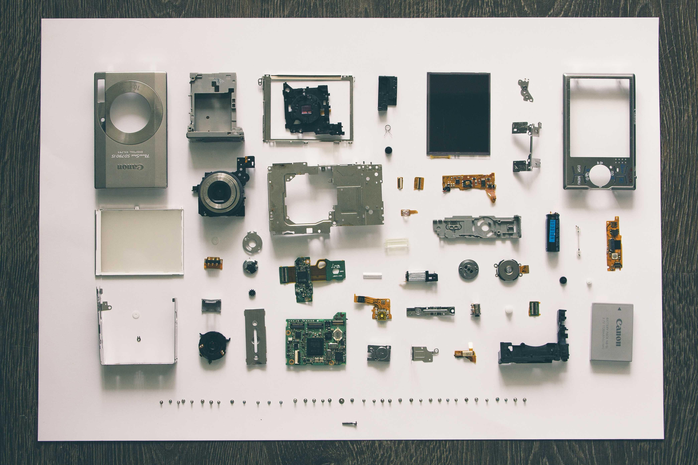

Hi, I'm Luiz!
About me
I am a Computer Science Major and Data Science Minor at Illinois Wesleryan University.
I have been learning about technology-related topics since 2020 with an emphasis in Web Development.
Throughout my studies, I have been able to create applications for local businesses in my home
country, Brazil, and I have just started working on a mobile app for a startup!

My Projects
As I learn new technologies, I start building some self-driven and class-driven projects to put my knowledge into practice.
They vary from simple Web Applications to a model that is able to solve text-based CAPTCHAs using a series of steps. All of them are posted on GitHub!
